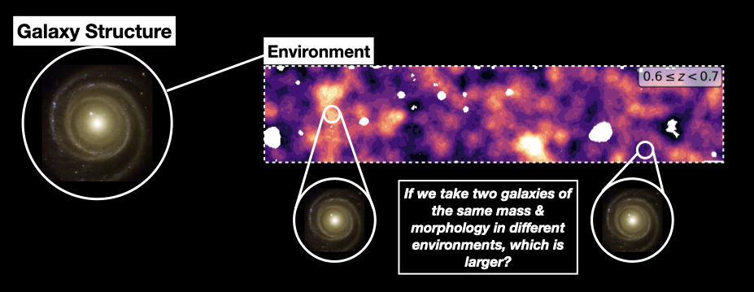
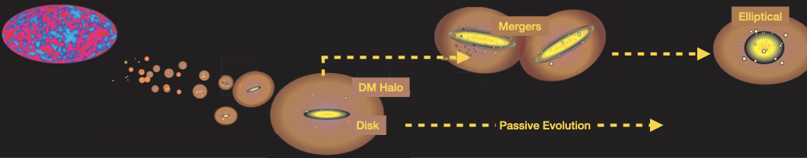
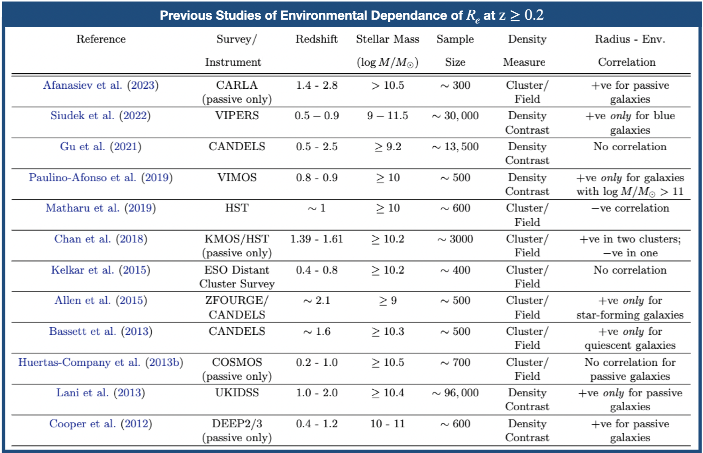
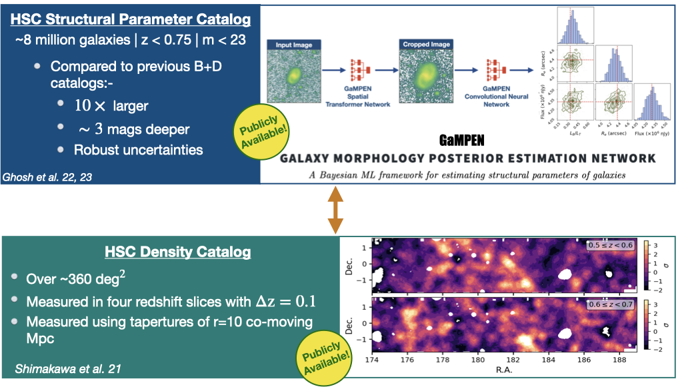
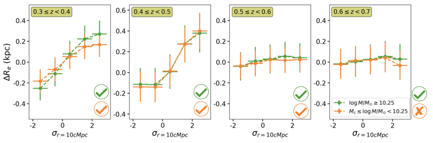
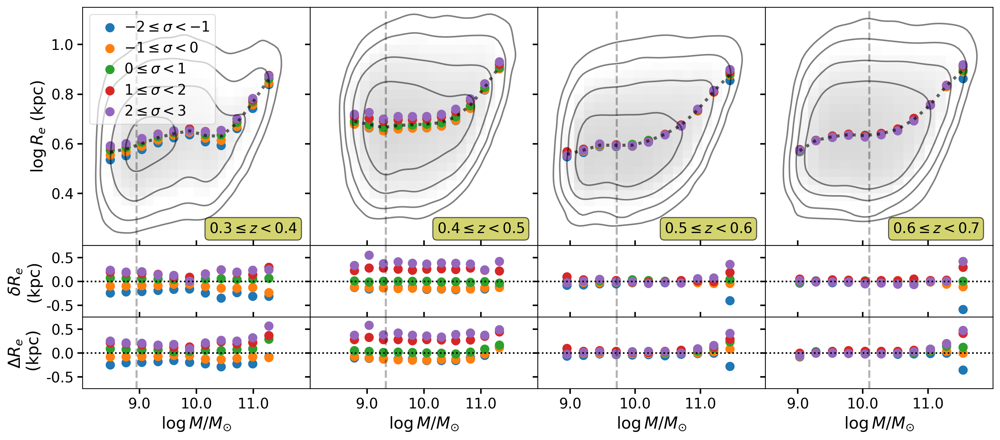
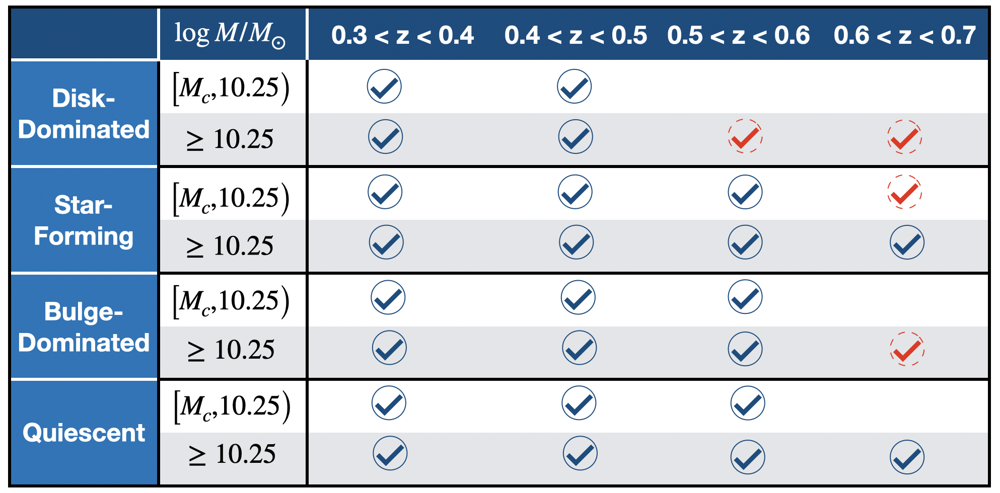

Denser Environments Cultivate Larger Galaxies
A Comprehensive Study beyond the Local Universe with 3 Million Hyper Suprime-Cam Galaxies
Quick Summary: We used a sample of $\sim3$ million Hyper Suprime-Cam galaxies to demonstrate with $>5\sigma$ confidence that galaxies in denser environments are upto $\sim25\%$ larger than their counterparts with similar mass and morphology in less dense regions of the universe. This comprehensive study is an important step in resolving decades of contradictory results on this topic. It also sheds new light on how the structure of galaxies is connected with their dark matter halos; as well as their merger history.
Recorded Talk: Rubin Community Workshop
The Power of ML & Robust Statistics in Galaxy Evolution: from HSC to LSST
Why did we do this work?
The relationship between galaxy size and environment has remained enigmatic despite being studied for more than a decade, with no broad consensus in the field. Different studies have reported wildly conflicting results beyond the local Universe ($z \geq 0.2$), as summarized in the Table below. While some studies have reported a positive correlation of radius with the environment for certain subpopulations of galaxies; others have reported no correlation; and yet others have reported a negative correlation.
These conflicting results are primarily driven by:-
- Small Sample Sizes
- Absence of Robust Uncertainty Estimates on $R_e$
- Not Using Statistically Robust Techniques to Determine Correlation
- Not Properly Controlling for Nuisance Parameters (e.g., stellar mass, morphology)
What Did we Do?
In order to tackle the challenge outlined above, we correlated two publicly available catalogs --- the Hyper Suprime-Cam (HSC) structural parameter catalog with the HSC environmental density catalog to create a sample of 3 million HSC galaxies at $ 0.3 \leq z < 0.7 $ with $m < 23$ and $ \log M/M_{\odot} \geq 8.9 $. Compared to previous studies, this overlapping sample is $\sim100-10,000$ times larger and goes $\sim1$ dex deeper in mass-completeness. 
What Did we Find?
First, we correlate the deviation in effective radius from the average size, $ \Delta R_e = R_e - \overline{R_e}(M,L_B/L_T) $, against density excess measured using a top-hat of 10 co-moving Mpc ($\sigma_{r=10\,{\rm cMpc}}$). We perform the measurement separately in four different redshift slices.

An alternative way to answer our primary question is to investigate the size-mass relationship for galaxies in different environments. Therefore, we performed a size-mass analysis for our entire sample.
We also investigated the presence of the correlation separately for different subpopulations of galaxies and the results are shown in the table below.
